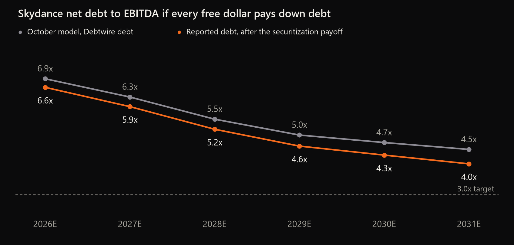
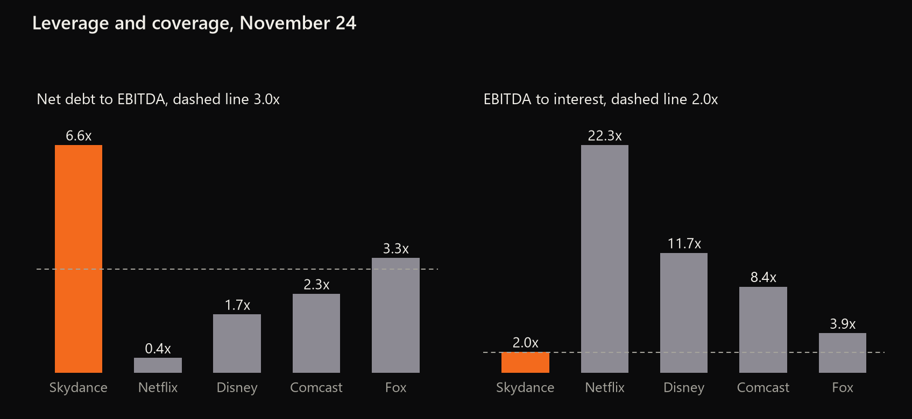
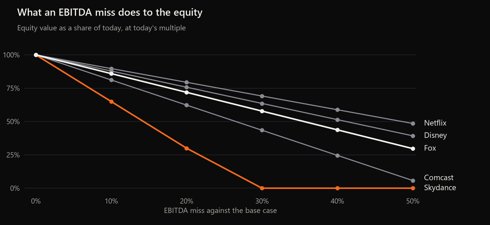

Media DCF models and credit comps.

Five media companies, valued the same way and read as credits.
In short
- The question
- Which of five media companies can carry its debt?
- Data and method
- Five DCF models on one template from SEC filings, then a credit comparison.
- What I found
- Skydance is far past the other four, at 6.6 times leverage and 2.0 times coverage. A 29 percent EBITDA miss wipes out its equity.
- What it means
- Cash flow alone does not reach the 3.0 times target. That leaves asset sales or equity.
One template, five companies, and what each price already assumes
Companies on one DCF template, with the same rules.
Formulas across the models and the comps workbook, zero errors.
Skydance net debt to EBITDA. Comcast was next at 2.3 in October.
Skydance EBITDA to interest. The other four covered 8 to 22 times.
EBITDA miss that wipes out Skydance's equity at the November 24 price.
Skydance leverage by 2031 on cash flow. The target is 3.0 by 2029.
| Company | Net debt to EBITDA | WACC | Market EV to EBITDA | Perpetuity, base | Exit multiple, base | Market price | Growth the price implies | Exit multiple the price implies | Terminal share |
|---|---|---|---|---|---|---|---|---|---|
| Skydance, November | 6.6x | 9.2% | 9.3x | $9.45 | $5.63 | $6.50 | 0.1% | 7.4x | 71% |
| Skydance, October | 6.9x | 9.2% | 10.1x | $8.80 | $4.97 | $7.77 | 1.1% | 8.4x | 71% |
| Netflix | 0.4x | 10.3% | 17.1x | $49.79 | $68.16 | $65.85 | 5.1% | 13.4x | 72% |
| Disney | 1.6x | 9.4% | 9.2x | $79.11 | $114.42 | $110.16 | 4.1% | 9.6x | 68% |
| Comcast | 2.3x | 7.5% | 4.5x | $44.48 | $34.81 | $22.04 | -5.3% | 3.6x | 69% |
| Fox | 0.6x | 7.6% | 7.9x | $72.52 | $58.88 | $68.27 | 0.5% | 8.7x | 67% |
Reversing each DCF gives the growth and multiple the price already assumes. In October Comcast was priced as if cash flow shrinks 5 percent a year forever. Nothing here is a recommendation to buy or sell anything.
Move the inputs and watch the value move
Skydance is on the November debt and price. The other four are October.
Scales every year of cash flow and the terminal value. The credit view below uses the same miss.
Value per share, perpetuity method
Value per share, exit multiple method
Perpetuity value against the market price
Share of value past the forecast
Net debt to first year EBITDA
Equity left at today's multiple after the EBITDA change
Same formulas as the Excel models: mid year discounting, a stub for the first year, the equity bridge off net debt and other claims. Skydance includes the warrant dilution above $12. The bear and bull scenarios in the models also change revenue and margins, which this slider does not.
The same five, read the way a desk reads them
| Company | Net debt to EBITDA | EBITDA to interest | Free cash flow after interest to net debt | Net debt share of enterprise value | DCF equity over net debt | EBITDA miss that wipes out the equity | Spread to Treasury on the cost of debt | S&P rating, where sourced |
|---|---|---|---|---|---|---|---|---|
| Skydance, November | 6.6x | 2.0x | 1% | 71% | 0.6x | -29% | 305 bp | BB |
| Skydance, October | 6.9x | 1.8x | 0% | 68% | 0.5x | -31% | 305 bp | BB |
| Netflix | 0.4x | 21.6x | 130% | 3% | 29.2x | -97% | 85 bp | A |
| Disney | 1.6x | 19.3x | 22% | 17% | 3.3x | -80% | 75 bp | A |
| Comcast | 2.3x | 7.9x | 16% | 50% | 2.0x | -50% | 95 bp | A range |
| Fox | 0.6x | 10.9x | 88% | 8% | 12.7x | -92% | 125 bp | not found |
Skydance fails every test the other four pass. Net debt is 71 percent of enterprise value, and free cash flow after interest is close to zero in year one. Only its spread is anchored on sourced levels, from October. The other four are my inputs. Fox is shown before Roku, which closed on November 6.
Can Skydance get to 3.0 times on cash flow alone
With every free dollar going to debt, leverage is 5.9 times at the end of 2027, 4.6 at the end of 2029 and 4.0 at the end of 2031. Reaching 3.0 at today's EBITDA means cutting about $44 billion of net debt.

Net leverage, year by yearBase case. Neither line reaches the target.

Five charts, one per question

Leverage and coverageOctober figures. Skydance stands alone on both. 
The equity cushionOctober prices. Skydance hits zero at a 31 percent miss, Comcast at 50. 
Where each DCF lands against its priceOnly Comcast's whole range sits above its price. 
Reverse the DCFThey agree everywhere except Comcast. 
Cost of capital and terminal value shareTwo thirds or more of every valuation sits past the forecast.


Why I built this
I covered the Paramount Skydance tender at Finsight, then watched the market reprice every bond it had when the Warner Bros. Discovery debt was sold. One company on its own does not tell you whether that price is fair. So I built four peers the same way and read all five as credits.
What I would watch
- Free cash flow after interest. About $0.4 billion in year one of my base case, before $1.1 billion of dividends. The fourth quarter will be the first combined report.
- Asset sales or equity. Getting to 3.0 times means cutting about $44 billion of net debt. The $1 billion of equity in October is 2 percent of that.
- The first liens. The 7.05 percent notes traded at 272 bp on October 13, per Debtwire, 170 bp wide of the BBB index. I have found no published level since the stock fell to $6.50. With this little equity under them, I expect them to react to the stock more than a BBB bond would.
- The other four. Netflix and Disney carry less than 2 times leverage. Comcast is at 2.3 times, and half its capital is debt. Fox is a different credit now. Its pro forma borrowings after Roku are $16.9 billion, 4.3 times its own fiscal 2026 EBITDA before counting anything Roku earns.
What is the same and what is not
- Same discount rate inputs. 10 year Treasury 4.95 percent, equity risk premium 4.5 percent, cash tax 23 percent, market weights, Hamada relevering. Cost of debt 75 to 125 bp over Treasuries for the four investment grade names, 8 percent blended for Skydance.
- Same cash flow definition. Adjusted EBITDA less stock compensation, cash restructuring, cash taxes on profit after tax depreciation, capex and a working capital and content line. Stock compensation is a real cost in all five.
- Same mechanics. Mid year discounting, a first year stub, perpetuity and exit multiple side by side, three scenarios on one switch.
- Different fiscal years. Disney and Fox run FY2027 to FY2032 with stubs of 0.94 and 0.68. The other three run calendar 2026 to 2031 with a 0.19 stub.
- Different pending deals. Comcast is modeled before the NBCUniversal and Sky spin, Fox before Roku, and Skydance after Warner Bros. Discovery, which had closed.
- Interest expense. Comcast's and Disney's are reported. Skydance's, Netflix's and Fox's are estimates from gross debt and a blended coupon, flagged in the comps. The Skydance one came out high, $6.7 billion against about $6 billion.
What I got wrong first
First I used quoted betas as if they were unlevered. Netflix came out at an 11.6 percent WACC and $42 a share, and Comcast's unlevered beta fell below that of a utility. I set the betas by hand, at 0.6 for Fox, 0.7 for Comcast, 0.9 for Skydance, 1.05 for Disney and 1.2 for Netflix, and recorded the reasoning on each WACC sheet.
Then the one a desk would catch first. I had the four investment grade names borrowing at 5 to 5.5 percent with the 10 year at 4.95. That is 5 to 55 bp of spread, and nobody in investment grade prices there. I moved them to 75 to 125 bp over Treasuries. The change has little effect on three of them and takes $3 off Comcast, because half its capital is debt.
On October 26 I checked those inputs on a terminal against where each name's long dated debt trades. Disney, Netflix and Fox were close enough. Comcast was the miss. After three agencies placed it on negative watch for the spin, the market had it wider than my 95 bp by a margin that would not surprise a desk. Moving Comcast's cost of debt to the market level lifts its WACC to 7.8 percent and takes about $2 more off the perpetuity value. It does not change any conclusion, because the model still lands well above the price. The levels themselves are not published on this site.
Since the models
- Skydance. On November 9 it reported $87 billion of debt and about $10 billion of cash, less net debt than I had. The stock fell from $8.70 that day to $6.50 on November 24. The November rows use both. The details are on the Skydance page.
- Fox and Roku. I wrote that the deal would close in the first half of 2027 at the earliest. It closed on November 6. Fox then sold $8.4 billion of notes in seven parts, from 85 bp over Treasuries at 3 years to 200 bp at 40, per Fixed Income News Australia. My Fox model is out of date.
- Disney. Fiscal 2026 revenue was $102.3 billion and segment operating income $19.7 billion. My base year had $101 billion and $19.7 billion.
- Netflix. $58.87 on November 24, against $65.85 in the model.
- Rates and spreads. The 10 year was 4.92 percent on November 23, against 4.95 in the models. The ICE investment grade index was 97 bp, from 92 on November 17.
- Supply. Investment grade sales passed the 2020 record this fall. Reuters, on LSEG data, had $1.88 trillion through November 4.